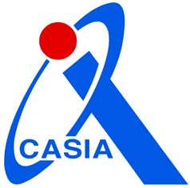
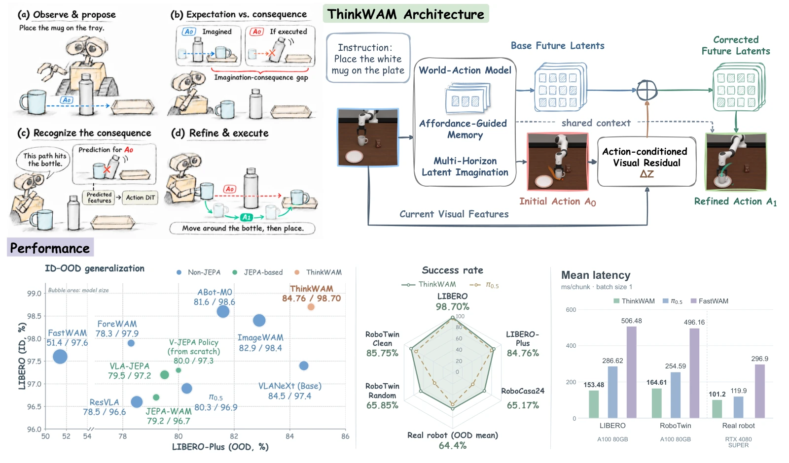
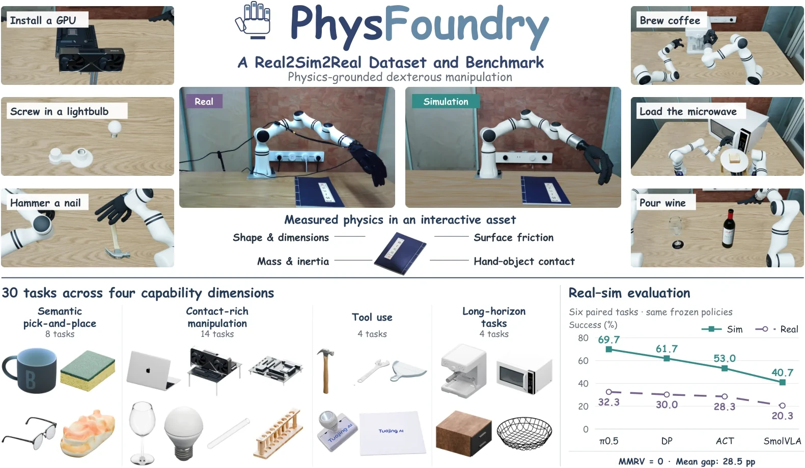
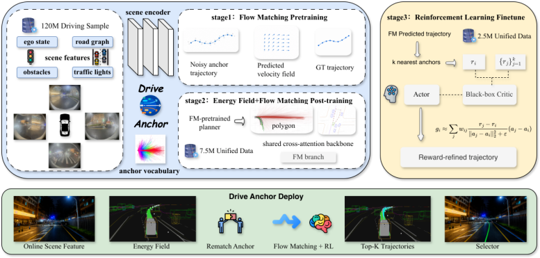
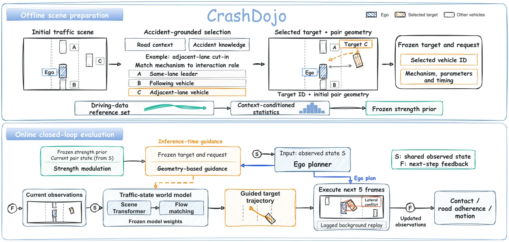
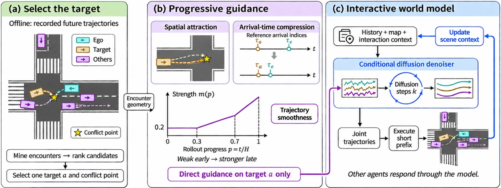
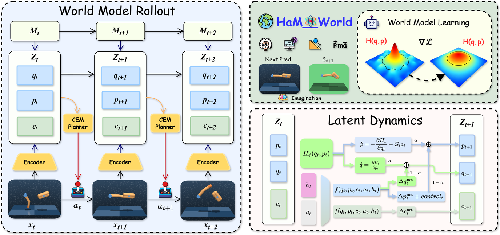
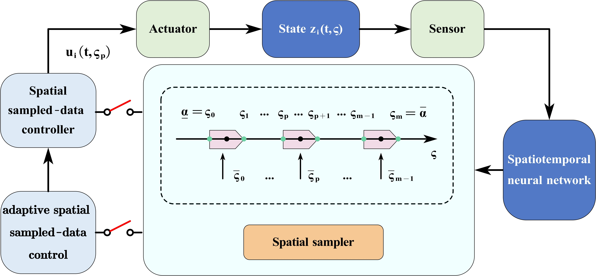
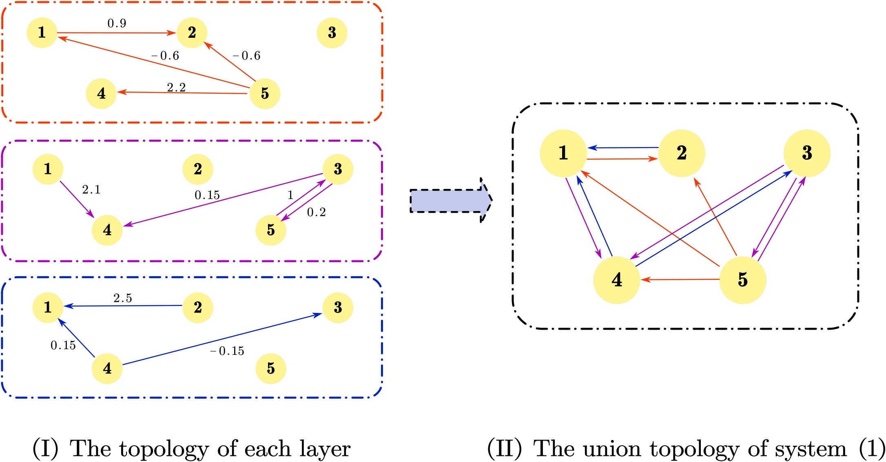

About Me
👋 Welcome to my personal homepage! I am Haoyun Tang, currently an M.S. student in Applied Mathematics at the School of Mathematics and Statistics, Xi'an Jiaotong University (XJTU).
🔬 My research interests primarily focus on World Action Models, Reinforcement Learning, and Embodied Intelligence. I am dedicated to building world representations that let robots anticipate the consequences of their actions and refine them before execution.
🤖 Currently, I am an Embodied AI Research Intern at TuojingAI, mentored by Bowen Jing, and a World Model Research Intern at Nexus Lab, Peking University, advised by Bin Chong. Feel free to contact me!
WeChat: thy15512506753
🔥 News
- Our new paper ThinkWAM: Rethinking Latent Futures for Action Refinement is available on arXiv, with a project page and code.
- 🎉 Our paper HaM-World: Soft-Hamiltonian World Models with Selective Memory for Planning has been accepted by NeurIPS 2026.
- Our paper DriveAnchor: Progressive Anchor-based Flow Learning for Autonomous Driving Planning is available on arXiv.
- Our paper HaM-World: Soft-Hamiltonian World Models with Selective Memory for Planning is available on arXiv, with code released.
- 🎉 Our paper Spatial Sampling-based Passivity and Synchronization of Multiweighted Coupled Reaction-diffusion Neural Networks was accepted by CNSNS.
- 🎉 Our paper Adaptive Passivity-based Synchronization of Spatiotemporal Neural Networks with Multi-weighted Coupling under Spatially Point Measurements was accepted by CISC 2025.
🎓 Education
-
Xi'an Jiaotong University | M.S. in Applied Mathematics2026.09 - Present
- Research focus: World Action Models, Reinforcement Learning, Embodied Intelligence
💼 Experience
-
TuojingAI | Embodied AI Research Intern2026.12 - Present | Beijing · On-site
- Research focus: Benchmarks for evaluating embodied agents
- Mentored by Bowen Jing
-
 Peking University - Nexus Lab | World Model Research Intern2026.09 - Present | Beijing · Remote
Peking University - Nexus Lab | World Model Research Intern2026.09 - Present | Beijing · Remote- Research focus: Persistent object-state memory for video world models
- Advised by Bin Chong
-
The University of Hong Kong - MMLab | Autonomous Driving & Embodied AI Research Intern2026.09 - 2026.12 | Hong Kong · Remote
- Research focus: Autonomous Driving & Embodied AI
- Mentored by Haibao Yu
-
 Fangju Research Institute | Embodied AI Independent Researcher2026.09 - 2026.12 | Xi'an · On-site
Fangju Research Institute | Embodied AI Independent Researcher2026.09 - 2026.12 | Xi'an · On-site- Research focus: World Action Models (ThinkWAM)
- Mentored by Huibin Li
-
 LinkerBot - Evo Lab | Embodied AI Algorithm Intern2026.06 - 2026.09 | Beijing · On-site
LinkerBot - Evo Lab | Embodied AI Algorithm Intern2026.06 - 2026.09 | Beijing · On-site- Research focus: Dexterous-hand VLA/WAM post-training
- Mentored by Xuetao Xing
-
Meituan - Autonomous Delivery | Autonomous Driving Algorithm Intern2026.03 - 2026.06 | Beijing · On-site
- Research focus: Flow-matching trajectory generation for motion planning
- Mentored by Xuetao Xing
-

Institute of Automation, CAS | Reinforcement Learning Algorithm Intern2025.11 - 2026.02 | Beijing · On-site- Research focus: Multi-agent RL & world-model navigation
- Advised by Prof. Zhiqiang Pu
📝 Publications

A latent world-action model whose action proposal corrects multi-horizon future latents; the corrected futures then condition a second pass of the same action head to refine the executed chunk.

Grounds interactive assets and manipulation data in measured real-world physics across four capability dimensions, and evaluates both the training utility of generated data and the reliability of simulated evaluation against the real robot.

A three-stage planner built on a vocabulary of real trajectory anchors, combining residual Flow Matching, Energy-Field corridor guidance and anchor-guided zeroth-order reward fine-tuning.

Turns accident evidence into explicit actor–mechanism requests and guides a frozen traffic world model to execute them in closed loop, adapting to the ego planner while keeping the intended maneuver and timing.

Uses the spatial and temporal safety margins of recorded encounters to guide generation: a progressive soft intervention shrinks these margins for one selected agent, while the world model generates the ego and surrounding traffic responses in closed loop.

Decomposes the latent state into a soft-Hamiltonian (q, p) space and a semantic context with selective memory, improving long-horizon rollout stability and OOD robustness for planning.

Spatial sampling control for passivity and synchronization of multiweighted reaction-diffusion neural networks, applied to image encryption.

Adaptive spatial sampling control for passivity-based synchronization of multi-weighted spatiotemporal neural networks.
🚀 Projects
-
Robotic Loading & Unloading for a Welding Workstation (Tianjin Hackathon, Second Prize) [Demo] Keywords: YOLOv8, RGB-D Localization, DexGraspAnything, IK, ROS 2 YOLOv8 detection and Orbbec depth localization of randomly piled parts, with DexGraspAnything grasps and IK positioning for automatic welding-fixture loading and unloading. (3× speed)
-
ThinkWAM Real-Robot Deployment (Galaxea A1Z) [Demo] [Website] Keywords: World Action Model, Real-Robot Manipulation, OOD Generalization, Action Refinement Deployed ThinkWAM on a Galaxea A1Z arm for pick-and-place under three out-of-distribution conditions (multiple target objects, color distractors, purple lighting) with human disturbance, reaching 64.4% mean success with 101.2 ms two-pass inference per action chunk. (2× speed)
-
Car Obstacle Avoidance Navigation (DreamV3) [Demo] Keywords: DreamV3, Autonomous Navigation, Obstacle Avoidance, Reinforcement Learning Built a small-car navigation project using DreamV3-style world model reinforcement learning for obstacle avoidance and autonomous route following in a structured driving environment.
-
UAV Obstacle Avoidance Navigation (SAC) [Demo] Keywords: UAV, SAC, Obstacle Avoidance, Reinforcement Learning Built a UAV obstacle avoidance navigation experiment using Soft Actor-Critic to learn collision-aware flight behavior in a structured simulation environment.
-
Road2Gen-Drive (MetaDrive IL+RL / GAIL) [GitHub] Keywords: MetaDrive, Behavior Cloning, PPO, GAIL, Generalization Built end-to-end autonomous driving experiments in MetaDrive with two independent pipelines: IL+RL (BC pretraining + PPO fine-tuning) and GAIL for adversarial imitation learning and generalization evaluation.
-
Multi-UAV Collaborative Surrounding (MAPPO + AirSim) [GitHub] Keywords: AirSim, MAPPO, Multi-UAV, Curriculum Learning Built a 3v1 multi-UAV cooperative surrounding environment in AirSim and a MAPPO training pipeline with curriculum learning and tailored reward design.
🏆 Awards
- Meritorious Winner, Mathematical Contest in Modeling (MCM), 2025
- Provincial Special Prize, China Undergraduate Mathematical Contest in Modeling (CUMCM), 2023
- Provincial First Prize, National College Student Mathematics Competition, 2024
- Provincial Second Prize, National College Student Market Research and Analysis Competition, 2024
- Provincial Second Prize, National Undergraduate Statistical Modeling Competition, 2024
- National Second Prize, Asia and Pacific Mathematical Contest in Modeling (APMCM), 2024
- National Third Prize, HuaShu Cup Mathematical Modeling Competition, 2024
- Jinlongyu Academic Scholarship, 2025
🛠 Skills
- Embodied AI: VLA, World Action Models, Action Experts, Diffusion Policy, Sim2Real, Dexterous Manipulation.
- Generative Models: Flow Matching, Diffusion Models, Latent World Models, JEPA.
- Reinforcement Learning & Planning: PPO, SAC, TD3, MAPPO, DreamerV3, MPC.
- Simulation & Deployment: MuJoCo, Isaac Sim, AirSim, MetaDrive, ROS2, RK3588, Galaxea A1Z.
- Programming: Python (PyTorch), Linux, Docker, Git.